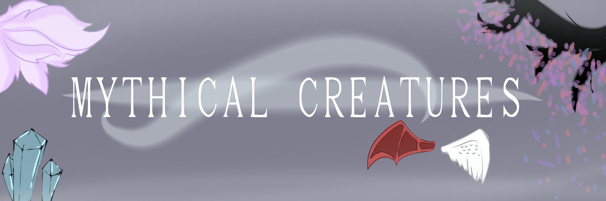

Dragons

Dragons: Dragons are winged, four-legged, huge serpentine creatures capable of breathing fire, people say they have snakelike features and reptilian scaly skin, they resemble giant snakes to some, they appear in many folklores all around the world. They are very majestic creatures.
Fairies

Fairies: Fairies are small mythical creatures from European folklore,many people know fairies to be tiny creatures that have a humanly appearance, and can fly because they have tiny delicate wings, they also are said to have magical powers and are very mischievous, they are used a lot as characters in books
Mermaids

Mermaids: Mermaids, they are creatures said to live in the sea, they are known to have the upper body of a female human and the lower body of a fish tail, male mermaids are referred to as “merman”.
Nine tailed fox

Nine tailed fox: Mythical foxes with nine tails, also known as the fox spirit, originated from Chinese mythology, they were said to have magical powers and were mischievous, they tricked people with their apparent ability of being able shapeshift, they normally disguised themselves as beautiful women
Phoenix

Phoenix: A fiery bird that die by disintegrating to ash and then reincarnate from their ashes to live again, they live many years before this happens though
Go back!
More!